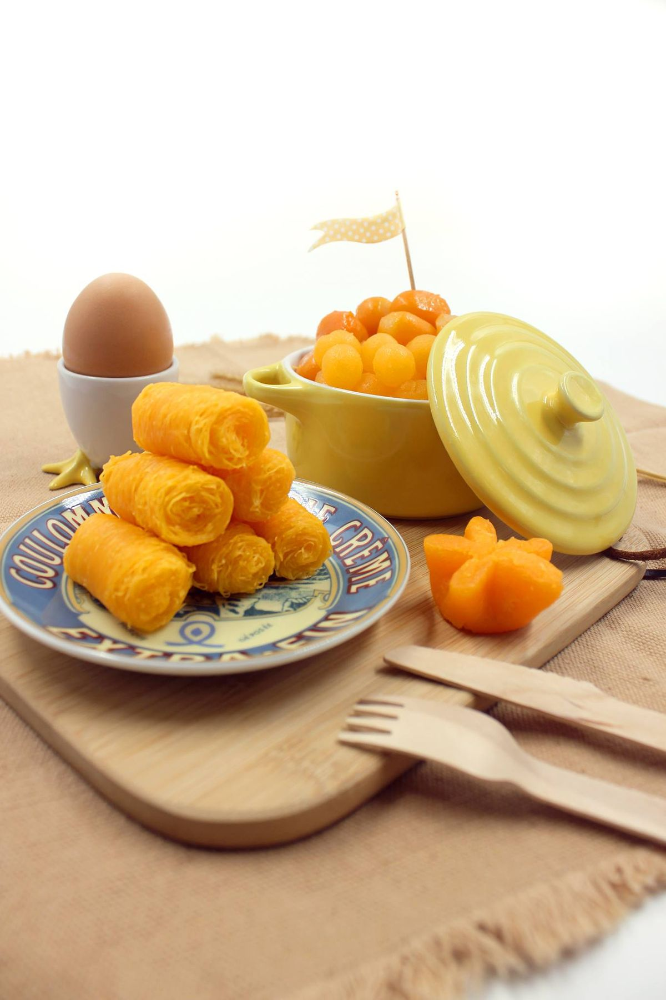

ขนมกุยช่ายเจ๊อิม เกาะขนุน
ขนมกุยช่ายเจ๊อิม เกาะขนุน ถือเป็นของฝากเจ้าดังประจำเมืองแปดริ้วเลยก็ว่าได้ ด้วยความโดดเด่นของกุยช่ายที่มีเท็กเจอร์ของเนื้อแป้งบาง เหนียวนุ่ม และมีการสอดไส้ผักต่าง ๆ เช่น หน่อไม้อ่อน กุยช่าย และเผือกอัดแน่นอยู่เต็มก้อน ยิ่งถ้าได้ทานคู่กับน้ำจิ้มรสเด็ดของทางร้านด้วยแล้ว ยิ่งทำให้รสชาติเข้ากันได้อย่างลงตัวมาก ๆ สำหรับใครที่กำลังมองหาของฝากรสชาติอร่อยครบรส ต้องลองซื้อขนมกุยช่ายเจ๊อิม เกาะขนุน ไปฝากคนที่บ้านกันดู
ขนมบ้านป้านงค์ ฝอยทางบางปะกง
หากใครอยากได้ขนมหวานกลับไปฝากคนรัก ขนมฝอยทองป้าอนงค์ก็จัดเป็นตัวเลือกที่น่าสนใจเช่นกัน เนื่องจากฝอยทองค่อนข้างมีรสชาติหวานน้อยกำลังดี ทั้งยังได้กลิ่นหอมอ่อน ๆ จากไข่อีกด้วย ซึ่งนอกจากที่ร้านจะมีขนมฝอยทองขายแล้ว ในส่วนของขนมไทยอย่างพวก ทองหยิบ ทองหยอด เม็ดขนุน ขนมทองเอก ขนมชั้น และเสน่ห์จันทร์ ก็ถือว่ามีรสชาติหอมอร่อยมาก ๆ ซึ่งไม่ว่าจะซื้อกลับไปให้คนรักหรือญาติผู้ใหญ่ ทุกคนก็ต้องถูกใจในความหวานกลมกล่อมของขนมหวานร้านนี้กันแน่นอน
ขนมชิฟฟ่อนบ้านอุ๋ม
หนึ่งในของฝากฉะเชิงเทรายอดนิยมเลยนั่นก็คือ ขนมชิฟฟ่อนบ้านอุ๋ม จุดเด่นของขนมชิฟฟ่อนร้านนี้จะมีรสชาติให้เลือกมากกว่า 10 รสชาติด้วยกัน แถมรสสัมผัสของขนมก็มีความนุ่มฟินละมุนลิ้นสุด ๆ เมื่อกัดเข้าไปทั้งคำแล้วไส้ข้างในก็มีความชุ่มฉ่ำอย่าบอกใครเลยล่ะ ที่สำคัญขนมชิฟฟ่อนของทางร้าน ยังสามารถเก็บด้วยอุณหภูมิปกติได้นานถึง 5 วันด้วยนะ ถ้าใครยังไม่รู้ว่าจะซื้ออะไรกลับไปฝากคนที่บ้านหรือเพื่อนร่วมงานกันดี ขนมชิฟฟ่อนก็เป็นตัวเลือกที่ดีเช่นกัน
ขนมเปี๊ยะ ตั้งเซ่งจั้ว
ที่หนึ่งในใจชาวแปดริ้ว คงเป็นใครไปไม่ได้ถ้าไม่ใช่ ขนมเปี๊ยะ ตั้งเซ่งจั้ว เป็นร้านของฝากชื่อดังที่เปิดขายมายาวนานกว่า 80 ปี ทีเด็ดของขนมเปี๊ยะร้านนี้อยู่ที่ไส้ด้านใน ซึ่งมีการอัดแน่นความอร่อยไว้อย่างเต็มคำ ส่วนเนื้อสัมผัสภายนอกก็มีความกรอบนุ่ม และมีไส้ให้เลือกหลากหลายรสชาติมาก ไม่ว่าจะเป็นไส้ถั่ว ไส้ถั่วไข่เค็ม ไส้ถั่วดำ ไส้สับปะรด ไส้ทุเรียน และไส้เค็มหมูเต้าหู้ยี้ ซึ่งแต่ละไส้นั้นก็มีรสชาติที่เป็นเอกลักษณ์ของทางร้านเลย ถ้าใครอยากได้ของฝากอร่อยๆ ไปฝากญาติผู้ใหญ่ เจ้านาย คนรัก หรือครอบครัว ขนมเปี๊ยะร้านนี้ก็เป็นของฝากที่ไม่ควรพลาดเลย
แหล่งที่มาของข้อมูล
salehere.co.th
จัดทำด้วย ❤ โดย นิติธร นันทสินธ์ 65003263019
65003263019@mail.rru.ac.th